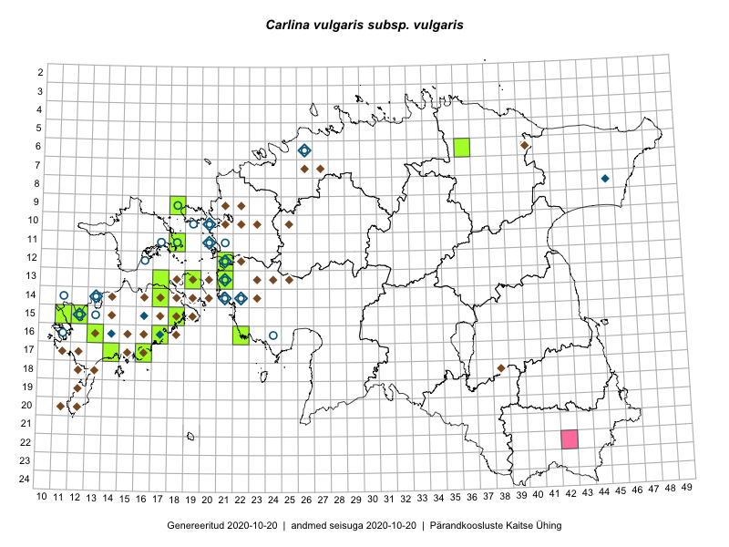

Carlina vulgaris subsp. vulgaris — harilik keelikurohi (kitsas tähenduses)
Kaardile koondatud taksonid: Carlina vulgaris subsp. vulgaris L. (16)

Kaart põhineb 16 kirjel, neist:
vaatlusi 0
eksemplare 16
Kaasaegsed1 leiukohad asuvad 14 ruudus.
Andmed “Eesti taimede levikuatlasest”,2 sulgudes ruutude arv:3
● 1971–2005 (119)
○ 1921–1970 (45)
△ kuni 1920 (2)
+ hävinud (0)
? kaheldav (0)
Lisaruudud teistest andmebaasidest:4
ELF: 2006– . . . (0)
PKÜ: 2006– . . . (0)
ELF: 1971–2005 (0)
PKÜ: 1997–2005 (0)
| Ruut | Vaatleja(d) | Vaatlusaeg | Kirje PlutoFis |
|---|---|---|---|
| 12-21 | Peedu Saar, Ott Luuk | 2015-08-27 | TAA0116086: Carlina vulgaris subsp. vulgaris L. |
| 15-11 | Peedu Saar | 2015-08-05 | TAA0116087: Carlina vulgaris subsp. vulgaris L. |
| 11-18 | Peedu Saar, Nele Jõessar, Sander Laherand | 2016-08-08 | TAA0133873: Carlina vulgaris subsp. vulgaris L. |
| 06-36 | Peedu Saar, Liina Oja, Susanna Vain | 2016-07-27 | TAA0133875: Carlina vulgaris subsp. vulgaris L. |
| 16-17 | Toomas Kukk, Eerik Leibak | 2015-08-08 | TAA0135585: Carlina vulgaris subsp. vulgaris L. |
| 17-14 | Toomas Kukk, Meeli Mesipuu, Johannes Kõdar | 2016-08-11 | TAA0137016: Carlina vulgaris subsp. vulgaris L. |
| 13-19 | Toomas Kukk | 2012-09-06 | TAA0112370: Carlina vulgaris subsp. vulgaris L. |
| 15-12 | Toomas Kukk | 2012-08-21 | TAA0112460: Carlina vulgaris subsp. vulgaris L. |
| 09-18 | Sander Laherand, Toomas Kukk | 2016-07-07 | TAA0135763: Carlina vulgaris subsp. vulgaris L. |
| 16-13 | Aira Alasi, Sirje Azarov | 2015-09-09 | TAA0133675: Carlina vulgaris subsp. vulgaris L. |
| 17-16 | Aira Alasi, Sirje Azarov | 2015-08-12 | TAA0133676: Carlina vulgaris subsp. vulgaris L. |
| 17-16 | Aira Alasi, Sirje Azarov | 2015-08-17 | TAA0133677: Carlina vulgaris subsp. vulgaris L. |
| 13-21 | Thea Kull | 2015-08-28 | TAA0139334: Carlina vulgaris subsp. vulgaris L. |
| 16-17 | Ott Luuk, Peedu Saar | 2016-09-01 | TAA0139087: Carlina vulgaris subsp. vulgaris L. |
| 13-17 | Ott Luuk, Peedu Saar | 2016-08-29 | TAA0139243: Carlina vulgaris subsp. vulgaris L. |
| 14-17 | Ott Luuk | 2015-06-29 | TAA0142437: Carlina vulgaris subsp. vulgaris L. |
Kaasaegsed leiukohad (tähistatud värvitud ruutudega) põhinevad peamiselt 2014–2019 välitööandmetel. Väiksemal määral on andmebaasi kantud vanemaid leiuandmeid aastatest 2006–2013.↩︎
Kukk, T., Kull, T., Eesti taimede levikuatlas. Eesti Maaülikool, Põllumajandus- ja Keskkonnainstituut, Tartu, 2005.↩︎
NB! 2005. aasta atlase andmestikus katavad uuemad leiud vanemaid. Näiteks kui liik on ruudus registreeritud 1971–2005, siis pole võimalik öelda, kas ta oli sellest ruudust teada ka enne 1970. aastat. Vana atlase andmetel hävinud ja kaheldavaid leiukohti pole hilisemate (taas)leidude põhjal korrigeeritud.↩︎
Eestimaa Looduse Fondi (ELF) ja Pärandkoosluste Kaitse Ühingu (PKÜ) andmebaasid sisaldavad inventeeritud koosluste kirjeldusi ja liigiloendeid. Neist andmekogudest on kaardile lisatud lisatud vaid need ruudud, millest uue atlase andmekogus taksoni kohta kirjeid veel pole. Kõrvale on jäetud teadaolevalt kaheldavad määrangud. Kaartidel katavad uuema perioodi andmed vanemaid, PKÜ omad ELFi omi. Kattumise tõttu võib kaardil näha olla vähem mingi kategooria ruute kui legendis olev arv näitab. ELFi ja PKÜ andmed ei kajastu hetkel vaatluste tabelis ega ruutude liigiloendites.↩︎